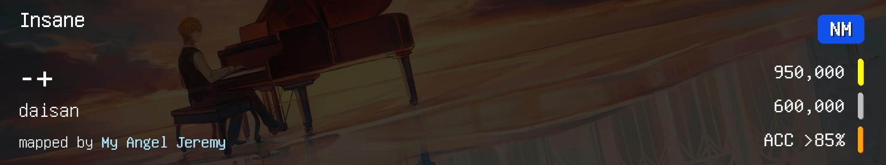
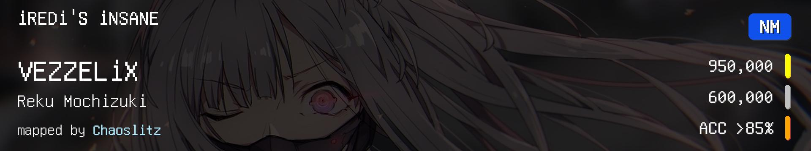
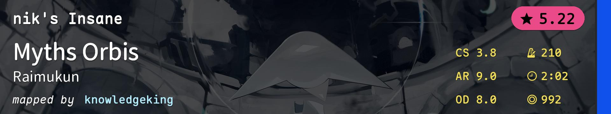
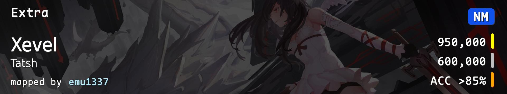
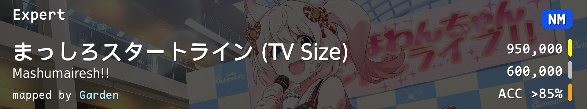
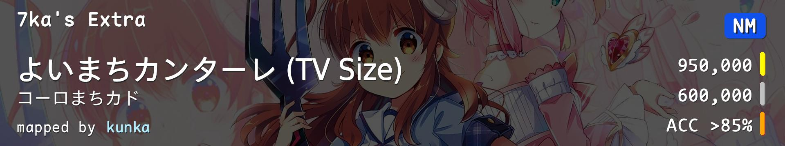
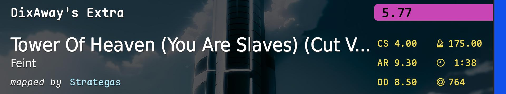
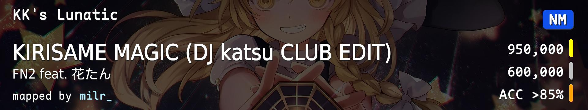
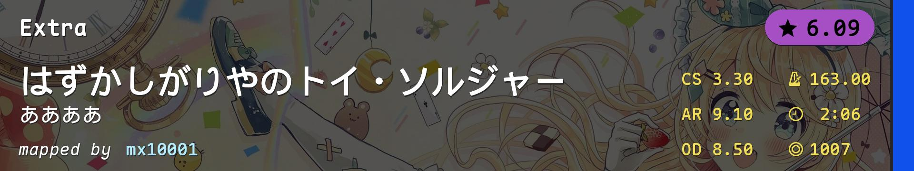

| # |
BID |
Beatmap Info |
CS |
HP |
OD |
AR |
Hit Length |
BPM |
Stars |
Notes |
| 1 |
3766205 |
 |
3.6 |
5.0 |
8.0 |
9.0 |
1:31 (693x) |
185.0 |
4.86 |
切指+爆发 |
| 2 |
3910493 |
 |
3.8 |
4.5 |
7.4 |
9.0 |
1:50 (950x) |
190.0 |
5.12 |
切指+爆发 |
| 3 |
4392407 |
 |
3.8 |
5.0 |
8.0 |
9.0 |
2:02 (992x) |
210.0 |
5.22 |
高速爆发 |
| 4 |
2606880 |
 |
3.8 |
4.0 |
8.0 |
9.0 |
1:54 (985x) |
185.0 |
5.59 |
稳定 |
| 5 |
3731647 |
 |
4.0 |
6.0 |
9.0 |
9.3 |
1:31 (587x) |
177.0 |
5.77 |
偏串综合 |
| 6 |
2229835 |
 |
4.0 |
5.0 |
8.5 |
9.0 |
1:27 (629x) |
171.0 |
5.60 |
偏串综合 |
| 7 |
4139556 |
 |
4.0 |
4.5 |
8.5 |
9.3 |
1:38 (764x) |
175.0 |
5.77 |
中速串 |
| 8 |
1192762 |
![dj TAKA feat. AiMEE - True Blue (Chaoslitz) [Cupid]](./连打进阶.covers/8-1192762.jpg) |
4.0 |
5.5 |
8.5 |
9.0 |
4:51 (2223x) |
164.0 |
5.53 |
耐力 |
| 9 |
4409454 |
 |
4.0 |
5.0 |
8.5 |
9.0 |
3:55 (1592x) |
150.0 |
5.47 |
手控/耐力 |
| 10 |
4140869 |
 |
3.3 |
5.1 |
8.5 |
9.1 |
2:06 (1007x) |
163.0 |
6.09 |
变间距串 |